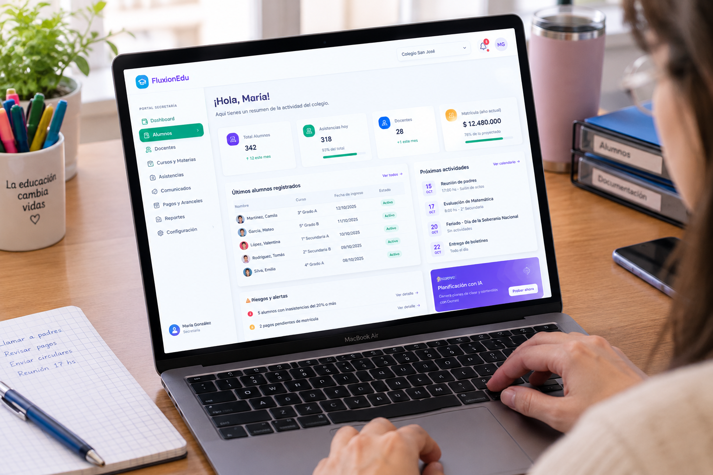

Web SaaS de escritorio
Para coordinar, planificar y auditar con serenidad. Tablas claras, reportes ejecutivos en PDF o Excel y permisos configurables.
- Paneles de lectura descansada
- Gestión de miembros y cursos
- Compatible con navegadores modernos